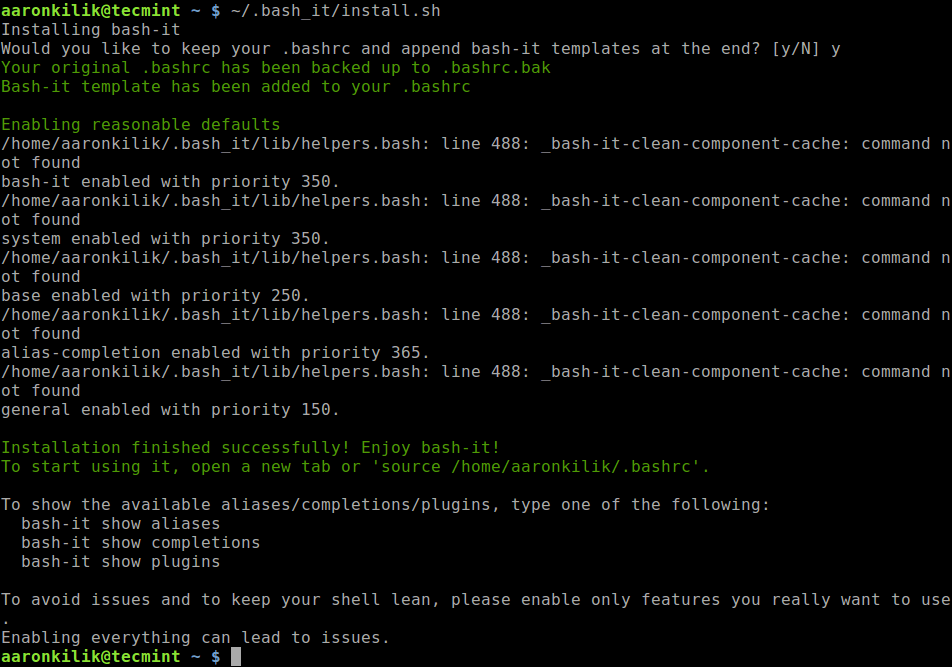

講義資料ノート
全ての資料はこのドキュメントにまとまっています．
毎回の講義資料が都度追加されますので，本ページの URL をブックマークしておくと便利です！
初回課題の案内
Web サイト「チーズアカデミー」を制作ッ！！
- 「チーズアカデミー」の web サイトを HTML と CSS を使って作成！
- 制作した web サイトをブラウザで開いたときにデザインと同様に．
- 細かい数値は厳密でなくて OK！
↓ 画面イメージ（一部）

必要なファイルや素材
まずは下記の URL からダウンロードしましょう．案内と材料が全て入っています！
完成イメージ
assets/cheese-academy-sizing.pngに入っています！
HTML
- HTML は
index.htmlファイルに記述！ - 必要な文章は
assets/text.txtに書いてあるのでコピペして使おう！
CSS
- CSS は
css/style.cssファイルに記述！
参考情報
制作に使用するエディタについて
課題クリアに必須級「chrome 検証ツール」
CSS が効かねええ(｀；ω；´)
締切
- JavaScript 1 回目講義開始時
提出方法
- 上記講義につくったものを持参（自分の PC で見せられる状態になっていれば OK）
進め方
- 仕様書の細かい数値にはこだわらなくて良いです（自分がいい感じになったと判断すれば OK）．
- 【重要】だいたい仕様書通りにできたら，オリジナリティを表現（魔改造）しよう！！
【重要】魔改造の例
- レスポンシブ対応した
- コナミコマンドを入力すると怪しいサイトに変化するようにした
- チーズを集める 3D ゲームをつくった
- PHP でニュースを投稿できるようにした
- iOS アプリケーションをつくった
ジーズは「普通」では生き残れない！
誰よりもヤバいものつくって目立て！！
受講時の注意
時間もお金も投資しているのだからむしり取れるだけむしり取れッ！
講義中に意識するポイント
ただ受けているだけだと資料の内容しかものにできずもったいない！
まず下記は絶対厳守！！！
- うまくいかないときに黙っている「サイレント詰み」は犯罪！
- まずはわからなくても「動くもの」をつくれ！
- 食糧飲料燃料の補給は各自のペースで！（自分にとって最適な状況を用意！）
いつでもコードを書けるように！
- 授業中は常にエディタを起動！
- 資料も常に開いておこう！
講義中はまず動くものをつくれ！
- 講義では一緒に 1 つのアプリケーションをつくる．
- わからなくてもとにかく「動かす」．
- 課題に挑戦すると大抵うまくいかない．そのときに「講義でつくった動くもの」と「自分でつくった動かないもの」を比較して何がマズイのか探る！
聴くときは聴き，書くときは書く！
- 初めて挑戦することなので，わからなくなって当然．．！
- まずはしっかり説明を聴こう！
- 聴くときは聴くこと，手を動かすときは手を動かすことに集中！！
クラスのメンバーでお互いに刺激し合おう！
- 考えたことや感じたことは slack の「ガヤチャンネル」でガンガン発信！
- くだらないことでも OK！！意見を言うやつは偉い！！
- 誰かのコメントに乗っかろう！
疑問を共有しよう！
- 質問はまず slack へ！
- 慣れないうちは「詰んだ」の一言から．詰みを表明することが大切！
- 慣れたら「エラーのスクショ」や「書いたコード」を貼ろう！
- 他の人の質問にも目を通そう！（同じ質問があるかも）
進捗を共有しよう！
- 演習時，できた人はスクショなど slack に貼ってアウトプット！
- できたら「できた」コメント or スタンプ！
- 詰んだら「詰んだ」コメント or スタンプ！
- みなさんのコメントを見ながら講義を進めていきます！
詰みを脱する Tips
- まずは打ち間違いを疑おう！
()[]{}'";など
- 書いたら保存しよう！（よく忘れる！）
- Mac:
command + s - Windows:
ctrl + s
- Mac:
- 他の人に見てもらおう！
- 自分の打ち間違いは 10 分探しても見つからないが，他人の打ち間違いは 2 秒で見つかる．
- 「隣の人」「slack + スクショ」「zoom のブレイクアウト」を活用するのだッ！
コードへの向き合い方
彼を知り己を知らば百戦危うからず．
質問を制すものはコードを制す！
わからなかったり動かなかったりのときは遠慮なく質問せよ！
下記を記述するとお互いに幸せになれる確率が高まるッ！
- やりたいことは何か
- どういう状態（動き）になればゴールなのか
- どうやったか（考え方や書いたコードなど）
- どうなったか（エラーメッセージやスクショなど）
- 調べたときのググりワード，参考にしたサイトの URL
勿論最初から全部はできないので，まずは遠慮なく投稿するのが大事！
（足りない部分は講師チューターの方々が拾ってくれる）
言語化が大事！
- 「言語化」とは自分のやりたいことやうまくいかない現状を他の人に説明すること．
- 言語化は「できると良い」ではなく「できなければコードが書けない」のである．講師チューターは超能力者ではないので，みなさんが説明しなければ何をしたいのかわからないのだッ．．！
- コードを書くにも「JavaScript で何を書けばよいのか」「どうなれば OK なのか」を自ら決めて明確にすることが第一歩．
- 「やりたいことや必要な処理を日本語で書き出す」→「コードに翻訳する」と考えるとやりやすい．
- 無理矢理にでも言葉にしたら誰かにぶつけよう．誰かと議論することでより解像度が高まる．最初は「ちょっと何いってるかわからない」と言われるが，やらないと言語化のスキルは高まらない．沈黙は死．
正解を求める思考を捨てよ！
- 「唯一の正解は存在しない」
- 提示されたヒントでは動かないこともあるし，それとは異なる方法でうまくいくこともある．
- 一つのやり方に固執することは地獄への一本道を進むことに似たり．
- 「効率のよいやり方」など一旦動かしてから改めて考えれば良い．力技だろうがまずは動けば良かろうなのだァァッ！！
「コードは量」という勝ちパターン！
- 一発でうまくいくことはほぼない．特にはじめの頃は経験値が少なく「運ゲー」度が高いので，何度もやり直してうまく行くパターンを引かなければならない．
- 運ゲーをものにするには試行回数が必要で，そのためには時間が必要になる．敵の行動パターンを集めながら会心の一撃が出るまで粘れ！
- わからなければ講義内容を 10 周くらいすれば何か見えてくるはず．わからないと嘆く時間があるならコードを書こう．レベルが足りないなら経験値を稼ごう．
課題にチャレンジするコツ
課題を制すものは全てを制す．
すごい課題を作れッ！
ジーズは「すごい課題をつくってくる人が一目置かれる場」です！
「すごい」とはなにか？？
- 他の人では思いつかないアイデアや処理の使い方で魅せる．
- 講義で扱っていない要素をガンガン取り入れて新しいプロダクトを創る．
- 講義で扱った内容だけでどれだけつくれるか挑戦する．
- バグ潰しや細かい使い勝手を追求して高い完成度を目指す．
ほかにもいろいろありそう．
どれが正解とかはないので，自分が得意とするやり方で「すごい課題」をつくっていきましょう！！
自分でネタを決めよ！
- 誰かに言われたものをつくっても面白くない．．．
- 自分で「何をつくりあげるのか」を決断してチャレンジすることが大切！
- 「自分で決めたことをやり遂げる」のが最高に Cool ッ！
つくりたいものをつくれ！
- 「役に立つ」「ウケそう」ではない．．．
- 「自分がほしい物」「おもしろいと思うもの」にチャレンジすることで身が入る！
- 「誰かに褒められる感覚」よりも「全力でやりきった感覚」！
まず見た目より動きをつくれ！
- プロダクトには「機能」「見た目」どちらも大事！
- 見た目を作り込むことでより「完成度の高いプロダクト」になる．
- しかしまずは「機能」や「動き」をつくる．「見た目」はその後！
- 見た目を先につくると，機能を変更したときに作り直しになる．．．
技術自体を楽しめ！
- 技術は「アイデアを実現するためのツール」．
- しかし技術をより深く知ることで「できることのイメージが広がる」！
- 「好きな技術」「やってて楽しい技術」を見つけよう！まずは技術にのめり込もう！
雑談コーナー
泥臭いコードを恐れるな！
- 「動いたけどこのコードいいのか．．？」
- 「同じこと 100 回書いてるけど流石におかしいやろ．．．」
良いしおかしくないです．まずは 「動くコードを書く」 のが第一目標！
効率良い悪いとかきれい汚いとか，一旦つくってからでないと議論ができません．今持っている手札でなんとかするからこそ，後々便利な機能を知ったときに凄さがわかる！
とにかく動かしてみて，「こんな感じで動かしたけど，なんかもっといい方法ないっすかねー？？」みたいな議論も良きですね！
課題提出
課題提出の流れ
- 課題のプロダクトを各自実装する．
- プロダクトのフォルダ内に readme ファイルを作成し，下記を記述する．
- 概要（どんなものか，どうやって使うか，など）
- 工夫した点，こだわった点
- 苦戦した点，もう少し実装したかった点
- 感想など（任意）
- デプロイしていれば URL
- 作成したプロダクトを GitHub に push する．
- 課題提出システムに URL を入力して送信！
- GitHub の URL 以外は受け付けない点に注意．
提出システム：https://work-management-app.vercel.app/
提出後の流れ（フィードバック）
- 締切までに上記 URL から課題を提出すると，チューターのメンバーがフィードバックをくれる．
- slack の「課題提出」チャンネルの自分の課題に対するフィードバックを確認し，チューターにコメントを返す．
- slack の「feedback」チャンネルのコメントを見て他の人の気になる作品を確認し，適宜議論する．
HTML & CSS
サンプルコード
本講義の内容とゴール
本講義の内容
- HTML を書いて動かす！
- CSS を書いて動かす！
- FlexBox を用いたレイアウトで練習用サイトを実装！
本講義のゴール
- HTML と CSS に慣れる！
- FlexBox をマスターする！
- チーズ完成のイメージを掴む！
HTML と CSS の役割
それぞれの役割
役割分担が大事！
| HTML | コンテンツの指定 タイトル，文章，画像などの記述 |
| CSS | コンテンツの装飾 色，大きさ，配置などの指定 |
【例】
【参考】
https://fastcoding.jp/blog/all/jquery/html-css-javascript/
本日の成果物
ジーズアカデミーの紹介サイトを作成！
HTML
ジーズアカデミーの紹介文や写真を記述しよう！
CSS
文字の大きさや色，配置をいい感じに設定しよう！
成果物イメージ
ファイルの準備と動作確認
必要なファイルの準備
- 新しいフォルダをデスクトップに作成
- vs code を開き「file」→「open」 -> 上で作成したフォルダを選択
- 左側の「New File」をクリック -> 「index.html」と入力
- 左側の「New File」をクリック -> 「css」と入力
- css フォルダを選択して「New File」をクリック -> 「main.css」
- サンプルの「img」フォルダを作成したフォルダの中に入れる
↓ このような構成になっていれば OK！
.
├── css
│ └── main.css
├── img
│ ├── content_img.jpg
│ └── main_bg.jpg
└── index.html
HTML の準備
- web ページのフォーマットを入力
- index.html を開く
- 「!」を入力（必ず半角）
- 「tab」を押す
- 下のようになれば OK！
HTML の構造
<!-- index.html -->
<!DOCTYPE html>
<html lang="en">
<head>
<!-- 文書自体の情報（文書名・読み込むファイルなど） -->
<meta charset="UTF-8" />
<meta name="viewport" content="width=device-width, initial-scale=1.0" />
<meta http-equiv="X-UA-Compatible" content="ie=edge" />
<title>Document</title>
</head>
<body>
<!-- 実際の文章の内容（文章や画像など）．ここにコンテンツを記述する． -->
</body>
</html>
CSS ファイルの読み込み
html ファイルと css ファイルの関連付け
- index.html を開く
- 「
<title>...」の 1 行下で「link」を入力して tab キー - タグができるので，「
href=」の後を「css/main.css」に変更
<!-- index.html -->
<!DOCTYPE html>
<html lang="en">
<head>
<meta charset="UTF-8" />
<meta http-equiv="X-UA-Compatible" content="IE=edge" />
<meta name="viewport" content="width=device-width, initial-scale=1.0" />
<title>Document</title>
<!-- 🔽 下記 1 行を追加 🔽 -->
<link rel="stylesheet" href="css/main.css" />
</head>
<body></body>
</html>
HTML の動作確認
<body> タグ内にタグを作成して動作を確認する．
<!-- index.html -->
<!DOCTYPE html>
<html lang="en">
<head>
<meta charset="UTF-8" />
<meta http-equiv="X-UA-Compatible" content="IE=edge" />
<meta name="viewport" content="width=device-width, initial-scale=1.0" />
<title>ここがページのタイトルなので好きな名前に変えても良き</title>
<link rel="stylesheet" href="css/main.css" />
</head>
<body>
<!-- 🔽 下記 1 行を追加 🔽 -->
<h1>Hello World!</h1>
</body>
</html>
ブラウザ画面で「Hello World!」が表示されれば OK！

💡 【Point】開発の流れ
- エディタでコードを書く
- 保存する（
command + s,ctrl + s）- vs code でファイル名を右クリック →「
Copy Path」- ブラウザのアドレスバーに貼り付けて Enter
- 意図したとおりになっているかどうか確認
- 1-5 の繰り返し
HTML
タグ
<!-- htmlは「タグ」で挟む！ -->
<h1>セカイを変えるGEEKになろう</h1>
<p>最初は全くの初心者でOKです！！</p>
<!-- 挟まないものもある（単一のタグで成立） -->
<img src="hogehoge.png" />
タグの意味
プログラムがコンテンツの構造を理解できる．
- HTML を読むのは「プログラム」！！
なにがいいの？？
- 構造がしっかりしている web サイトはいい web サイトと判断される．
- 検索結果ではいい web サイトが上の方に表示される！
今回出てくるタグ
<div>この中に文章や画像を入れる「箱」のようなもの</div>
<h1>見出し1（タイトル，文書中に1つしか存在してはならない）</h1>
<p>段落（通常の文章はこれ）</p>
<h2>見出し2</h2>
<h3>見出し3</h3>
<img src="show-image.png" />
💡 構造をつくるコツ
全体をブロック（div 要素や section 要素）ごとに分ける！
入れ子構造（ツリー構造）を意識！
body ├── div │ ├── h1 │ └── p ├── div │ ├── h2 │ ├── h3 │ ├── p │ ├── h3 │ └── p ├── div │ ├── h2 │ ├── p │ └── p └── div ├── h2 ├── p └── pどのように分けるかでわかりやすさや実装しやすさが変わる．．！
今回の Web サイトの構造

練習
イメージを参考に HTML を書こう！
- 画像部分は
content_img.jpgを使用！
↓ こんな感じになれば OK！

CSS / ページ設定，背景，文字の大きさ，色
CSS の基本的な記述方法
CSS は「css ファイル」に記述する．
CSS の命令の適用箇所は HTML 要素（タグやクラス名）を指定する．HTML 要素にクラス名をつけることで，細かく適用箇所を制御することができる．
body {
/* タグに対して指定 */
/* ここに文字の色やサイズなどを指定する命令を書く */
}
.hoge {
/* `.` でクラス名で指定 */
}
.hoge,
.fuga {
/* 複数のクラスに適用 */
}
.hoge .fuga {
/* hoge クラス要素の下にある fuga クラスに適用 */
}
↓ HTML 要素にクラス名をつける例
<div class="hoge">
<h1 class="title">セカイを変えるGEEKになろう</h1>
<p class="fuga">G's ACADEMY FUKUOKA</p>
</div>
ページのサイズ指定
サイズは幅と高さを指定する．
/* 幅を指定 */
.box {
width: 480px;
}
/* 幅と高さを指定 */
.box {
width: 480px;
height: 360px;
}
今回は<body>タグに対して指定し，ページ全体の幅を 960px に設定する．
body {
/* body の幅を 960 px に設定する */
width: 960px;
}
背景の色，写真の設定
色や画像を設定する．
/* 背景を赤くする場合（#rrggbbの形式でも可） */
.box {
background: red;
}
/* 背景に画像を設定する場合（画像ファイルの場所を指定する） */
.box {
background: url(../img/main_bg.jpg);
}
画像の場合は大きさや位置を設定するとかっこいい感じになる．
/* 背景画像の大きさ */
.box {
background-size: cover;
}
/* 背景画像の位置 */
.box {
background-position: center;
}
文字の色，大きさの設定
/* 文字の大きさ */
.title {
font-size: 36px;
}
/* 文字の色（#rrggbbの形式でも可） */
.title {
color: white;
}
練習
練習用 Web サイトの以下の部分を実装しよう！
- ページのサイズ設定（全体の幅を 960px に）
- タイトルの背景部分に写真（
main_bg.jpg）を設定 - タイトル文字の大きさと色を変更（見やすい感じになれば OK！）
↓ ここまでのイメージ

【tips】検証画面の活用
検証画面を使おう！
検証画面とは
検証画面とは，ブラウザに表示されているアプリケーションに対して構造の確認や JavaScript の様子の確認などができるツールである．
検証ツールを使いこなすと，飛躍的に開発がしやすくなるッ．．！
主な機能
- HTML の構造の把握．
- 適用されている CSS の確認，CSS を記述しての反映（保存はされない）．
- JavaScript の実行結果の確認．
- ブラウザに保存されているデータの確認．
- ブラウザ - サーバ間通信の確認（接続サーバ，転送データなど）
使い方
まずは HTML 要素や適用されている CSS を確認してみよう！

注意点とコツ
検証画面上で CSS を追加・編集しても保存はされないので注意！
下記の流れがオススメ！
- 適当に CSS を記述する．
- 検証画面で CSS を確認し，良さそうな値に調整する．
- いい感じになったらエディタに戻ってコード追記 → 保存！
CSS / レイアウト
よくあるレイアウト
| 横並び | HTML は縦並びがデフォルト． |
| 左右中央 | HTML は左揃えがデフォルト． |
| 上下中央 | HTML は上揃えがデフォルト． |
float．．？
float を使うと要素を横並びにできる．．．が．．．

参考：https://gray-code.com/html_css/release-float-by-clearfix/
ものッ！すごくッ！！めんどくさいィィッッッ！！！！
FlexBox が全てを解決するッ！！
- 横並び
- 左右中央揃え
- 上下中央揃え
HTML のイメージ
下記のような要素を想定する（主な部分のみ記述）．
<div class="l_box">
<div class="s_box sienna"></div>
<div class="s_box firebrick"></div>
<div class="s_box maroon"></div>
<div class="s_box darkmagenta"></div>
<div class="s_box indigo"></div>
</div>
↓ 画面上はこんな感じ

横並び
display: flex; を記述！
- HTML は縦並びがデフォルト．
display: flex;を使用すると横並びにできる！
💡 Point
display: flex;に関連する CSS は「レイアウトを制御したい要素の外側の要素」に記述する！
.l_box {
display: flex;
}

左右中央揃え
justify-content: center; を記述！
- HTML は左揃えがデフォルト．
justify-content: center;を使用すると左右中央揃えにできる！
💡 Point
display: flex;は常に記述する必要あり！
.l_box {
display: flex;
justify-content: center;
}

上下左右中央揃え
align-items: center; を記述！
- HTML は上揃えがデフォルト．
align-items: center;を使用すると上下中央揃えにできる！
.l_box {
display: flex;
justify-content: center;
align-items: center;
}
縦並びが良い場合
flex-direction: column; を記述！
- flex は横並びがデフォルト．
flex-direction: column;を使用すると縦横の並び方を制御できる！
.l_box {
display: flex;
justify-content: center;
align-items: center;
flex-direction: column;
}

【参考】いい感じに並べたいとき
均等な感じにしたい場合にも設定できる．
↓ 端に寄せつつ均等に並べる space-between
.l_box {
display: flex;
justify-content: space-between;
align-items: center;
}
↓ 均等に余白をつくって並べる space-evenly
.l_box {
display: flex;
justify-content: space-evenly;
align-items: center;
}

練習
FlexBox を駆使して横並び部分を実装しよう！
ヒント！！
横並びの幅を均等にしたい！
- 横に並んでいる div の width を「50%」にしよう！
画像がはみ出す！
- 画像の width を「100%」に設定すると箱の幅に合わせてくれる！
- 高さが足りないときは height も「100%」！
- 画像の比率がおかしいときは「object-fit」でググれ！

演習
残りの部分を実装！！
これまでに扱った内容を応用すれば全部できるッ！
ヒント！！
タイトルを上下左右中央揃えにしよう！
- FlexBox を使え！！
concept を左右中央揃えにしよう！
- FlexBox を使え！！
- 必要なら
<div>を追加！ - 幅は「width」を「〇〇%」！
ページ全体を中央に寄せよう！
marginをいい感じに使うとできる！
わからないとき
- 「タグ名 やりたいこと」でググろう！
- 「css やりたいこと」でググろう！
- とにかく「ググる」
完成するとこんな感じだッ！
- 適当にアレンジを加えて OK！
- できた人は課題のできそうな部分を実装！
JS_おみくじ
サンプルコード
本講義の内容とゴール
本講義の内容
- JavaScript を動かす！
- 変数と条件分岐の練習と実装．
- おみくじアプリケーションの実装．
本講義のゴール
- プログラミングに慣れる！
- 「変数」「条件分岐」を扱う！
- 課題に取り組み始める！
JavaScript
JavaScript の役割
| 言語 | 役割 |
|---|---|
| HTML（マスター済み） | コンテンツの指定 タイトル，文章，画像などの記述 |
| CSS（マスター済み） | コンテンツの装飾 色，大きさ，配置などの指定 |
| JavaScript | ユーザー操作，イベント発生による動きを実現 （わりとなんでもできる） |
JavaScript とは
JavaScript ≠ JAVA
JavaScript と JAVA の違い
| JavaScript | JAVA |
|---|---|
| フロントエンド言語 | サーバサイド言語 |
| カモミール | カモ |
| オーストラリア | オーストリア |
| ハムスター | ハム |
| メロンパン | メロン |
Web アプリケーションに欠かせない JavaScript

言語別人気ランキング（2020 年）
| 言語 | 使用している開発者（%） |
|---|---|
| JavaScript | ||||||||||||||||||||||||||||||||||||||||||||||||||||||||||||||||||||||69.7% |
| HTML/CSS | ||||||||||||||||||||||||||||||||||||||||||||||||||||||||||||||62.4% |
| SQL | |||||||||||||||||||||||||||||||||||||||||||||||||||||||||56.9% |
| Python | ||||||||||||||||||||||||||||||||||||||||||41.6% |
| JAVA | ||||||||||||||||||||||||||||||||||||||38.4% |
| C# | ||||||||||||||||||||||||||||||||32.3% |
| TypeScript | ||||||||||||||||||||||||||||28.3% |
| PHP | ||||||||||||||||||||||||||25.8% |
JavaScript 周辺の技術

よく使われる技術
| 技術 | 特徴 |
|---|---|
| - JavaScript のライブラリ． - ユーザ操作イベントやアニメーションを実現 - ✅ 生 JS と比較して短くかける． - ✅ web アプリケーションで広く普及している． - ✅ 導入が簡単． - ✅ 学習コストが低い． - 🔼 難しいことをやろうとすると複雑になる． - まずはここから！ | |
| - JavaScript のライブラリ． - ✅ モダンな web アプリケーション（SPA）を実現 - ✅ 高速！ - ✅ TypeScript での実装も可能 - ✅ スマホアプリも見据えた開発が可能． - 🔼 学習コスト - 🔼 環境構築がややハードル． - （私は React が好き） | |
| - サーバサイドで JavaScript を動かす技術． - ✅ フロントもサーバも JavaScript で書ける．．！ - ✅ サーバサイドの中では環境構築が容易 - 🔼 難しいことをやろうとすると複雑になる． |
JavaScript を書く
書き方
<script></script>の間に処理を記述！
書く場所
- html ファイルの
</body>のすぐ上に書こう！ - ほかにもいくつか書ける場所があります．
- 別にファイルを作るやり方もあります．
まず動かす！！
alert()console.log()
文字列は「
'」か「"」で囲む．どちらでも OK！
<script>
alert("Hello world");
console.log("Hello world");
</script>
変数と計算
変数とは
「変数」は文字列や数値に名前をつけて，後から使用できるようにするもの．
プログラミングでは，ある部分で計算などして導出した値を別の部分で使用することが多い．
その際，毎回同じ計算を行うと不便であるため，1 回計算した結果に名前をつけておき別の部分でそのまま使えるようにする．
💡 Key Point
変数には自分で名前をつけるが，「何の値なのか」がわかるように名前をつけることが極めて重要！！
変数のルール
プログラミングで使用する値には「数値」「文字列」などの型が存在する．
- 「数値」は数学で扱う数と同様に計算できる．
- 「文字列」は開発者が決めたメッセージやキーワードなどである．英語でも日本語でも扱うことができ，
'（シングルクォーテーション）か"（ダブルクオーテーション）で囲む必要がある． - 変数名の先頭が数字になるパターンは NG！
const number1 = 100;
const number2 = 200;
const text1 = 'hello';
const text2 = 'world';
const 3text = 'JavaScript'; // NG
💡 Key Point
シングルクォーテーションとダブルクオーテーションはどちらでも良いが統一しよう！
数値の計算
数値は数学と同様に四則演算を行うことができる．
const number1 = 1 + 9; // 10
const number2 = 1 - 5; // -4
const number3 = 2 * 4; // 8
const number4 = 10 / 2; // 5
const number5 = 10 % 3; // 1
文字列の結合
文字列は「+」の計算を行うことができる．この場合は数学と異なり，前後の文字列が連結される．
const number1 = 100;
const number2 = 200;
const text1 = "hello";
const text2 = "world";
const sum1 = number1 + number2; // 300
const sum2 = text1 + text2; // helloworld
💡 Key Point
1と'1'は異なるッ！
NG ワード
変数名には使用できない単語が存在する
構文で使用するもの，将来的に使われるもの，など
- 「
if」「for」など
このような単語は「予約語」と呼ばれる．
- 「MDN javascript 予約語」で検索！！
- 引っかかる場合は少ないので今は気にしなくて OK！
練習
以下の処理を JavaScript で実装しよう！
- 「
100」と「200」の数値をそれぞれ変数に入れ，加算した結果をalert()で表示． - 「
G's」と「ACADEMY」の文字列をそれぞれ変数に入れ，つなげてalert()で表示． js_practice.htmlに記述しよう！
動作確認
それぞれ「300」と「G'sACADEMY」が表示されれば OK！
補足
JavaScript における変数の定義には「
const」「let」「var」の 3 種類が存在する．基本的には
constを使用し，どうしてもな場合にletを使用すれば良いだろう．const hoge = 100; const hoge = 200; // エラー（同じ名前で定義するのはNG） hoge = 300; // エラー（異なる値を入れ直すのはNG） // 後から上書きできる変数 let fuga = 1000; let fuga = 2000; // エラー（同じ名前で定義するのはNG） fuga = 3000; // OK（予期せぬ値が入ってしまう場合があるので注意） // むかしあったやつ（使わないほうが良い） var piyo = 99999; var piyo = 88888; // OK（あぶない） piyo = 77777; // OK（あぶない）
ランダムな数（乱数）をつくる
乱数とは
毎回異なる値が出てくる数のこと（例：1 回目に実行したら 1，2 回目に実行したら 4，など）．
JavaScript には最初から乱数をつくれる処理が用意されている（Math.random()）のでこれを利用する．しかし，この処理は 0 から 1 の範囲で小数を発生させるため，Math.floor()を用いて整数に直す．
// 0から1の間でランダムな値（乱数）を表示．
const randomNumber1 = Math.random();
alert(randomNumber1);
// 0から4までのどれかが表示される！
const randomNumber2 = Math.floor(Math.random() * 5);
alert(randomNumber2);
💡 Key Point
乱数の処理は毎回これでいけるので，覚えるよりコピペ！
補足
JavaScript のMath.~には多くの種類があり，絶対値を求めたり四捨五入したりする処理も存在する．
練習
math.htmlで以下の数をランダムに発生させてalert();で表示させよう！
| 最小値 | 最大値 | |
|---|---|---|
| 問題 1 | 0 | 9 |
| 問題 2 | 1 | 9 |
| 問題 3 | 5 | 10 |
| 問題 4 | 50 | 99 |
条件分岐
条件分岐
条件を満たすときと満たさないときで別々の処理を実行する！
if (`条件式`) {
// 条件式を満たす場合の処理
} else {
// 条件式を満たさない場合の処理
}
複数の条件で処理を分岐させることもできる！
if (`条件式1`) {
// 条件式1を満たす場合の処理
} else if (`条件式2`) {
// 条件式1と満たさなくて条件式2を満たす場合の処理
} else {
// いずれの条件も満たさない場合の処理
}
条件式
条件式は左辺と右辺の比較で行うことが多い（比較演算子）．
| 演算子 | 意味 | 補足 |
|---|---|---|
== | 左辺と右辺が等しい | 1と'1'は等しいと判定される． |
=== | 左辺と右辺が等しい | 1と'1'は等しくないと判定される． |
!= | 左辺と右辺が等しくない | 1と'1'は等しいと判定される． |
!== | 左辺と右辺が等しくない | 1と'1'は等しくないと判定される． |
> | 左辺が右辺より大きい | |
< | 左辺が右辺より小さい | |
>= | 左辺が右辺以上 | |
<= | 左辺が右辺以下 |
💡 Key Point
左辺と右辺が等しい場合に
a = bのように記述してハマる．a == bが正解．
条件式の組み合わせ
条件式は複数組み合わせることができる．下記 2 種類がよく使われる．
- 複数の条件式を全て満たす場合（AND 条件）は条件式を
&&でつなぐ． - 複数の条件式のいずれかを満たす場合（OR 条件）は条件式を
||でつなぐ．
if (`条件式1` && `条件式2`) {
// 条件式1と条件式2を両方満たす場合の処理
} else {
// 片方しか満たさない，両方満たさない場合の処理
}
if (`条件式1` || `条件式2`) {
// 条件式1か条件式2のどちらかを満たす場合の処理
} else {
// 両方満たさない場合の処理
}
💡 Key Point
条件分岐を書くときははじめに構文（
if(){}else{}）をつくってから条件や処理を書く！
練習
乱数と条件分岐を組み合わせておみくじを実装！
ランダムに「大吉・中吉・小吉・凶・大凶」をalert()で表示！
omikuji01.htmlに記述しよう！
ヒント！！
Math.rondom()で 0 から 4 を発生させる．（<- 前項でつくったものが使える．．！）- 出た数値に応じて
if文を使って条件分岐し，異なる内容をalert()で出力！
毎回ランダムで「大吉・中吉・小吉・凶・大凶」のどれかが表示されれば OK！
おみくじの Web アプリ実装
おみくじの処理自体はできたが，画面から操作できる Web アプリケーションにしたい！
想定される挙動
- 画面上の HTML 要素（DOM）をクリックして処理を実行！
- 要素を「指定」する！
- class や id で DOM を特定する．
- 指定した DOM に対して JavaScript で操作を行う！
例
- 「
idがbutton」の要素を「クリック」したら．．． - 「大吉-大凶のどれかをランダムに表示」！
参考（DOM）
HTML に記述されている各要素のこと（document object model）
基本の 3 要素
- selector（どこを）
- event（いつ）
- method（どうする）

なんだけど．．．
＿人人人人人人人人人人人人人人＿
＞ JavaScriptはDOM操作が苦手 ＜
￣Y^Y^Y^Y^Y^Y^Y^Y^Y^Y^Y^Y^Y^Y^￣
jQuery ライブラリ
jQuery とは
- セレクタを css と同じ要領で指定できる．
- 素の JavaScript よりも短く書ける！
- アニメーションなど手軽に設定できる．
- 書き方（順序や考え方）は JavaScript と同様！
- 導入が簡単（フレームワークなどは環境構築で詰む）
【参考】https://webkikaku.co.jp/homepage/blog/hpseisaku/webdesign/jquery_start/
💡 Key Point
- jQuery は JavaScript の DOM 操作を短縮して書けるライブラリ．
- 「JavaScript で行うたくさんの処理の中の DOM 操作だけをやる」と意識すると使いやすい．
- 計算などの処理を行うときは「乱数 javascript」，結果を表示するときは「jquery html テキスト 書き換え」などと検索するとヒットしやすい．
補足
ライブラリは他の開発者がつくったコードを利用させてもらうイメージ．手間のかかる処理を一発で書けるように実装してくれている．
ライブラリ読み込み
（jQuery に限らず）ライブラリはソースコードの読み込みが必要！！
（読み込みのコードは毎回同じなのでコピペで OK！）
<!-- 🔽 ここで読み込み 🔽 -->
<script src="https://ajax.googleapis.com/ajax/libs/jquery/3.6.0/jquery.min.js"></script>
<script>
// 自分で書いた処理
</script>
💡 Key Point
ライブラリを使用する場合は「自分で書く JavaScript より上の行で」読み込むこと．ライブラリで決められた関数を実行しようとして，読み込みが終わっていない状態だとエラーになってしまう．
jQuery の書き方と動き方
基本の考え方は JavaScript と全く同じッ！
コード例
idがbuttonの要素を- クリックしたときに
- アラートを出す
$("#button").on("click", function () {
alert("Hello World!");
});
コード内でそれぞれ以下の場所で指定している．
$(`セレクタ名`).on(`イベント名`, function () {
`実行したい処理（メソッド）`;
});
今回はidで指定しているが，セレクタの指定方法はたくさんある．イベントもたくさんある．
- 「
jQuery セレクタ」でググる！ - 「
jQuery イベント」でググる！
まずは形の入力に慣れよう！
いろいろな処理を書く前に，形の入力に慣れることが大事！！（慣れないとしょうもないスペルミスで時間溶かす）
$("#id").on("click", function () {
// ...
});
喋りながら書くと定着する（本当）
だらーあいでぃーおんくりっくふぁんくしょんかっこかっこなみかっこえんたー...
練習
おみくじアプリケーションを完成させよう！
仕様
- 「おみくじを引くボタン」をクリックしたら以下のどれかを画面に表示！
- 「大吉・中吉・小吉・凶・大凶」
ヒント
下記の流れで考えよう！
- ボタンをクリックしたらなにかする．
- ランダムな数値を発生させる．
- 条件分岐をつくって，対応する「大吉，中吉，...」を画面に表示させる．
$("#button").on("click", function () {
// 0から4でランダムな数を作成
// 0だったら大吉，1だったら中吉．．．
// 結果をidで指定した場所に表示
});
課題
じゃんけんアプリを実装！！！！！
じゃんけんアプリの仕様
- 「グー」「チョキ」「パー」のボタンを設置
- どれかをクリックしたら「コンピュータの出した手は？」を変更
- 「コンピュータ：グー」「コンピュータ：チョキ」など
- 「結果は？」の箇所に
- 「あなたの負け」「あなたの勝ち」「あいこ」のどれかを表示！
※上記を最低ラインとして製作
※これを土台にしてガンガン発展させよう！！
課題に対する考え方
| ✅ | ❎ |
|---|---|
| オリジナリティを表現する | 誰かに言われたものを作る |
| プロダクトを創る | プログラムを書く |
| 自分が好きなものをつくる | 受けが良さそうなものをつくる |
Git
事前準備
次回は大切なソースコードを管理&開発を円滑に進めるためのツール「Git」「Github」を扱います！
まずは下記の準備をすすめていきましょう！
準備 ① Github アカウントの取得（全員必須）
下記サイトを参考に Github のアカウントを作成してください！
（すでにアカウントをお持ちの方はそのままお使いいただけるので新たに取得する必要はありません）
参考： https://qiita.com/rshibasa/items/f62db870ed573ca4dced
準備 ②（windows ユーザのみ）
windows ユーザーのみ，下記サイトを参考に「Git for windows」のインストールをお願いいたします！
下記サイトの「初期設定」の手前まで実施してください． 初期設定からは授業で解説しながら行います．
参考： https://eng-entrance.com/git-install
準備していないと完全に詰みます！！！
準備 ③（Mac ユーザのみ）
Mac では git のコマンドを実行する場合，「Command Line Tools for XCode」が必要．
ターミナルで以下のコマンドを実行すればインストールできる．
$ xcode-select --install
実行するとウインドウが出てきて「ダウンロードしますか」的なことを訊かれるのでそのままダウンロードしてインストールする．
【補足 / 上記の手順でうまくいっている場合は不要】
上記コマンドを実行してもうまく行かない場合，下記の手順を実行する．
https://developer.apple.com/download/more/にアクセスする．自身の AppleID とパスワードを入力する．
検索窓に
command line toolsを入力し，Command Line Tools for Xcode 11.5を探し，ダウンロード → インストール．
準備していないと完全に詰みます！！！
GUI と CLI
「GUI」と「CLI」とは，ユーザがコンピュータを操作するときの方式である．
GUI とは
Graphical User Interface の略．
情報の提示に画像や図形を多用し，基礎的な操作の大半をマウスやタッチスクリーンなどによる画面上の位置の指示により行うことができるもの．
「いつも使用している画面上の操作」という認識で問題ない．

CLI とは
Command Line Interface の略．
コンピュータを操作するすべてのやり取りを文字によって行う方式．予め定められた「コマンド」を入力して操作を行うことが多い．
GUI では，ユーザがマウスやタッチ操作を行うのに対し，CUI で使用するのはキーボードのみ．

結局 CLI が必要
もともと PC は CLI しかなかった．
現代の PC は GUI（の表示されたディスプレイ）を見ながら操作する．
一方で，サーバなどを操作する場合には CUI（ターミナルなど）を使用する．自分の PC 内でも，操作によっては CLI が必須な場合がある．
例えば，以下の写真では自分の PC のターミナルからサーバマシンにアクセスしてコマンド操作している．

このように，Web の開発では CLI を使用するタイミングが必ず出てくる．基本的な操作を行って慣れておくことが大切．
CLI の操作
以下のアプリケーションを立ち上げよう！
これらのアプリケーションからコマンドを実行することができます！
| OS | コマンドを実行するアプリケーション |
|---|---|
| Mac | ターミナル（最初から入っている） |
| Windows | Git Bash（事前準備でインストール） |
※以降，どちらも呼び方はターミナルで統一します！
作業フォルダという概念
ターミナルでコマンドを実行するときは必ず現在地（フォルダ）があります！
起動した直後の現在地を「ホームディレクトリ」と呼びます．
コマンドを実行するときは，適切なフォルダに移動する必要がある．
例：あるテキストファイルを編集するコマンドを実行したい場合，テキストファイルが入っているフォルダに移動しなければならない．
【重要】下記のコマンドで現在の作業フォルダを確認できる．
$ pwd
代表的な操作
$マーク（%マークの場合もある）が出ているときはコマンド待機中（入力できる状態）
| コマンド | 実行例 | 意味 |
|---|---|---|
cd | $ cd Desktop | 最重要． 作業ディレクトリを変更する． cd ..で 1 階層上に移動．cd まで入力して，フォルダのドラッグ&ドロップでも移動先を指定できる． |
ls | $ ls -a | 現在のディレクトリにあるファイルとフォルダを表示する． -aをつけることで隠しファイルやフォルダを表示する． |
ファイルとフォルダの作成
| コマンド | 実行例 | 意味 |
|---|---|---|
touch | $ touch memo.txt | 新しいファイルを作成する． |
mkdir | $ mkdir test | 新しいフォルダを作成する． |
cat | $ cat memo.txt | ファイルの内容を表示する． |
ファイルを編集する
CLI 上で使えるエディタ
CLI で使用できるviというエディタが存在する．今後多用するため，操作を押さえておこう．
- CLI 上では
viと呼ばれるエディタを使用できる（他にもある）． viコマンドでエディタを起動する．
$ vi 編集したいファイルの名前
使い方の流れ
エディタには「コマンドモード」と「インサートモード」がある．
それぞれのモードでできることは以下のとおり．起動すると最初は必ずコマンドモードになる．
| モード | できること | 切り替え |
|---|---|---|
| コマンドモード | ファイルの保存，閉じる，など | iを入力するとインサートモードへ切り替わる |
| インサートモード | ファイルに対する追記や編集 | Escキーでコマンドモードに切り替わる |
使い方は主に下記の流れとなる．
- vi を起動する．
iを入力してインサートモードに変化する．-INSERT-などが表示される．- インサートモードで，ファイルに対して文字列の入力や編集が行う．
Escキーでコマンドモードに戻る．- コマンドモードで「ファイルを保存」「閉じる」などの操作を行う．
コマンドモードで使用する代表的なコマンド
| コマンド | 意味 |
|---|---|
:w | 現在開いているファイルを保存． |
:q | 現在開いているファイルを閉じる． |
:wq | 上記 2 つの組み合わせ．保存して閉じるの意味． |
:q! | 保存せずに閉じる．書いていて訳がわからなくなったらこれ． |
練習
以下の処理をやってみよう！
CLI 操作に慣れるのが目的！
- ターミナルでデスクトップに移動する．
testフォルダを作成する．testフォルダに移動する．testフォルダ内にsample.txtファイルを作成する．- vi で
sample.txtを開き，Hello CLI!と記述して保存して閉じる． - ターミナルで
sample.txtの内容を表示する．（Hello CLI! が表示されれば OK） - GUI で上記ファイルが作成されていることを確認．
【危険】滅びの呪文
PC の全てが死ぬ．絶対に実行してはならない．
（実行すると講義の受講に著しく支障をきたします）
参考：https://news.mynavi.jp/article/dont_run_on_linux-11/
Git
クイズ
あるフォルダの中に以下のファイルがあります．
最新のファイルはどれか．
議事録フォルダ
├── 20210701議事録.txt
├── 20210701議事録0702再修正.txt
├── 20210701議事録0702追記_確認依頼.txt
├── 20210701議事録0702追記.txt
├── 20210701議事録0702修正.txt
├── 20210701議事録0702修正2_チェック済.txt
├── 20210701議事録0702修正2.txt
├── 20210701議事録0702再修正.txt
├── 20210701議事録0702最終.txt
├── 20210701議事録0702追記.txt
└── 議事録.txt
このような悲劇を防ぐのが Git である．
「バージョン管理」
ファイルを更新していく際，以前の状態も残しておきたいことは多い．
- 修正点がわかるようにしたい．
- 不具合があった場合に，以前の状態に戻せるようにしたい．
しかし，これらを実現しようとすると「いくつもの状態のファイル」を複数残しておく必要がでてくる．
Git は上記を実現するための「更新履歴を管理するツール」である．
例
じゃんけんのアプリケーションをつくる際に Git を使ってバージョンを更新する流れ
| ファイルのバージョン | ファイルに対してやったこと | Git でやること |
|---|---|---|
| 1 | グーチョキパーのボタンをつくった | いまのバージョンをiw83n5とする |
| 2 | グーボタンでコンピュータが手を出す機能を追加した | いまのバージョンを21nvr7とする |
| 3 | チョキボタンとパーボタンでコンピュータが手を出す機能を追加した | いまのバージョンを98niehとする |
| 4 | 勝数をカウントする機能を追加した | いまのバージョンをmvre92とする |
このように「Git を使って管理」しておくと，以下のことができる．
- ファイルは最新の状態のもの 1 つだけが残される．
- 変更の履歴（追加や削除した文字列など）が全て記録される．
iw83n5などの文字列（ハッシュと呼ぶ）を指定することで，以前のバージョンに戻すことができる．- 他にもいろいろあるが，今回は省略．
このように，Git を使ってファイルを管理しておくと，「致命的なバグが発生したとき」「機能を追加しようとしてすでに動いている部分が動かなくなってしまったとき」などに「うまく動いていた状態」まで戻すことができる．
GitHub 概要
「Git」と「GitHub」は異なる！
「Git のバージョン管理」をオンラインで共有できるのが GitHub

Git のリポジトリは「リモートリポジトリ」と「ローカルリポジトリ」の 2 種類が存在する．
リモートリポジトリ
専用のサーバ（オンライン）に配置して複数人で共有するためのリポジトリです．
ローカルリポジトリ
開発者が自分の手元の PC に配置するリポジトリ．
リポジトリをリモートとローカルの 2 種類に分けることで，開発はローカルリポジトリを使って全て手元のマシン上で行い，最新バージョンはオンライン上に保存されて複数人で共有できる状態となる．
複数人でのバージョン管理がより簡単に！
オンライン上でソースコードを共有できるため，複数人で協力して開発を進めることが容易になる．
自分のローカルリポジトリで作業した内容を公開したい時は，リモートリポジトリにアップロードして公開する．
また，リモートリポジトリを通して他の開発者が作業した内容を取得して自分のローカルリポジトリに反映させることもできる．
Github はエンジニア同士の SNS
GitHub は単にソースコードをオンラインで管理するだけが役割ではない．
下記のようなことが実現できる「エンジニアの SNS」「エンジニアのコミュニケーションツール」でもあるッ！
- バグ報告などコードを使ったコミュニケーション（issue）
- 有志による機能開発とプロダクトへの反映（pull request）
- issue と pull request を用いたプロジェクト管理（個人開発でも有用）
【重要】readme ファイル
ソースコードを GitHub に push するときは，コードの案内（どんなプロダクトなのか，など）が必要となる．
そのために「readme」ファイルというものが存在する．下記の手順で作成してみよう．
- エディタでプロダクトのフォルダを開き，
readme.mdを新規作成． - 新規作成した readme ファイルに次の内容を記述しよう！
readmeファイルは「マークダウン形式」で記述する．
# プロダクトのタイトル
## プロダクトの紹介
- 箇条書きにすると
- 読みやすい
## 工夫した点，こだわった点
- 特に見てほしい点，
- うまくできたと感じている点など．
## 苦戦した点，共有したいハマりポイントなど
- ハマった経験は資産．
- あとで自分で見返しても有用．
readme ファイルはプロダクトのフォルダ内に保存しておき，他のソースコードと一緒に GitHub に push するとリポジトリの画面に表示される．
GitHub 設定
この手順を実行するタイミング
- はじめて GitHub に登録をしたとき．
- 新しい PC で GitHub にアクセスするとき．
ローカル PC と GitHub の通信には「SSH 通信」を使用する．
ssh 通信の流れ
- 「公開鍵」「秘密鍵」の 2 種類の鍵ファイルを作成する．この 2 つはペアになっている．
- 「公開鍵」の内容を GitHub 上に登録する．「秘密鍵」のファイルはローカル PC に保存する．
- ローカル PC に通信用の設定を記述する．
- 両者で通信を行う際，「公開鍵」と「秘密鍵」の組み合わせが合っている場合のみ通信が成功する．
本項では，この SSH 通信を行うための設定を行う．
SSH 鍵の発行
作業ディレクトリの確認
💻 ターミナルの操作
ターミナルを起動するとホームディレクトリにいるはずだが一応下記を実行．
$ cd ~
フォルダの準備
💻 ターミナルの操作
- ssh-key は適切な場所に配置しないと動かない．
- 以下の手順でフォルダを準備する．
下記コマンドでファイルとフォルダの一覧を表示する．
$ ls -a
一覧が表示されるので，「.ssh」フォルダを探す．
「.ssh」が存在しない場合のみ下記コマンドでホームディレクトリに.sshフォルダを作成する．
$ mkdir -p ~/.ssh
エラーが出なければ OK．
ssh-key の発行
💻 ターミナルの操作
- GitHub にアクセスするには ssh-key が必要となる．
- ssh-key は公開鍵と秘密鍵のペアになっており，「公開鍵を GitHub に登録」「秘密鍵を PC のローカルに保存」することで通信時に組み合わせがあっているかどうか判断する．
- ターミナル(windows は GitBash)を開いて以下のコマンドを入力する．
まずは以下のコマンドで作業ディレクトリを.ssh（前項で準備したフォルダ）に変更する．
$ cd ~/.ssh
続いて，以下のコマンドで ssh キー（公開鍵と秘密鍵のペア）を発行する．
$ ssh-keygen
実行結果
Generating public/private rsa key pair.
Enter file in which to save the key (/home/vagrant/.ssh/id_rsa):
そのまま何も入力せずに Enter．
Enter passphrase (empty for no passphrase):
続き．何も入力せずに Enter．
Enter same passphrase again:
続き．パスワード入力していないので何も入力せずに Enter．
Your identification has been saved in id_rsa.
Your public key has been saved in id_rsa.pub.
The key fingerprint is:
6f:09:00:22:44:55:66:77:95:89:41:7d:a7:58:1b:92 vagrant@localhost.localdomain
The key's randomart image is:
+--[ RSA 2048]----+
| .o. . |
| oEo+ . |
| . +=+= |
| o.+== |
| . . S . |
| - + . |
| . + |
| . |
| |
+-----------------+
これで ssh-key を発行できた．
【参考】
以下のコマンドで発行した内容を確認できるので，うまくいかない場合は確認してみると良い．
下記のようになっていれば OK．（細かな文字列や数値は異なっていて OK）．
$ ls -la | grep id_rsa # 実行結果 -rw------- 1 taroosg taroosg 1856 Dec 28 2018 id_rsa -rw-rw-r-- 1 taroosg taroosg 403 Dec 28 2018 id_rsa.pub
ssh キーの設定
💻 ターミナルの操作
以下 2 つのコマンドで ssh-key を動作するように設定する．
$ eval $(ssh-agent)
# 実行結果（数値は毎回異なる）
Agent pid 9899
$ ssh-add ~/.ssh/id_rsa
# 実行結果（ディレクトリは各自異なる）
Identity added: /home/taroosg/.ssh/id_rsa
以上で ssh-key の準備は完了だが，設定ファイルに変更を加える必要がある．
設定ファイルの編集
ターミナルで設定ファイルを開く
💻 ターミナルの操作
ややこしいので 1 つずつ確認しながら進めること！
- 下記のコマンドで設定ファイルに書き込む．
- 2 行目の「
vi ~...」ではターミナル内でエディタを起動する．画面が変わりますがパニックにならないよう注意！
ターミナルで以下を 1 行ずつ実行．1 行目がファイルの作成で，2 行目でエディタでファイルを開く．
$ touch ~/.ssh/config
$ vi ~/.ssh/config
設定ファイルに書き込み
💻 ターミナルの操作
- このエディタにはインサートモードとコマンドモードの 2 つがあり，最初はコマンドモードで表示されるが，追記を行うにはインサートモードに変更する必要がある．
- インサートモードにするには「
i」キーを押す．画面のどこかに—INSERT—や—挿入—などの文字列が表示される．その状態で「Host github」からの 5 行を追記する． - 追記が終わったら「esc（コマンドモードに戻る）」→「
:wq（保存して終了のコマンド）」→「enter（実行）」で元の画面に戻る． - ミスったと感じたら「
esc」→「:q!」→「enter」でエディタを終了できるので，もう一度「vi ~...」を入力してやり直しましょう．
.ssh/config ファイルを開くと空なので以下を追記する．
Host github.com
HostName github.com
Identityfile ~/.ssh/id_rsa
Port 22
User git
権限の変更
💻 ターミナルの操作
続いて，設定ファイルの権限を変更する．ターミナルで以下を実行．
$ chmod 700 ~/.ssh/config
エラーが出なければ OK．
GitHub への SSH 鍵登録
作成した ssh キーの表示
💻 ターミナルの操作
ターミナルで下記のコマンドを入力し，ssh-key を表示させる．
$ cat ~/.ssh/id_rsa.pub
実行結果（先頭は ssh-rsa だが，残りは各自異なる文字列となる）
ssh-rsa ...
...
...
...
...
... localhost@0-mac
GitHub に ssh-key を登録
🌏 ブラウザの操作
GitHub のサイトにアクセスし，「設定」→「SSH keys」へ進む．「Add SSH key」をクリックして入力画面へ進む．
ターミナルに表示された文字列を「ssh-rsa」から全てコピーし，GitHub サイトの入力欄に貼り付ける．タイトルは PC 名など適当につけて OK． 入力したら「Add key」をクリックして終了．
※公開鍵は PC 毎にペアを作成するため，どの PC で発行した公開鍵なのか判別できるように名前をつけると良い．
GitHub との接続設定
GitHub の接続情報を登録
💻 ターミナルの操作
「GitHub のユーザ名」と「GitHub で使用しているメールアドレス」をローカル PC に登録する．
ターミナルで下記コマンドを入力し，エンターを押す．
！！！それぞれ自身のアカウントのものを入力すること！！！
- 1 行目はユーザ名を入力する．
- 2 行目はメールアドレスを入力する．
$ git config --global user.name "hoge"
$ git config --global user.email "hoge@example.com"
内容確認
💻 ターミナルの操作
以下のコマンドを入力して内容を確認する．
$ git config -l
# 実行結果（下記以外にいくつか表示される場合もある．下記の内容が含まれていればOK）
user.name=hoge
user.email=hoge@example.com
上で入力した内容に間違いなければ OK．
接続テスト
💻 ターミナルの操作
ターミナルで下記を実行．途中でなにか訊かれたら「yes」と入力して進める．
$ ssh -i ~/.ssh/id_rsa git@github.com
# 実行結果（`Hi` の後は自分のユーザ名が表示される）
Hi hoge! You've successfully authenticated, but GitHub does not provide shell access.
Connection to github.com closed.
上記のように表示されれば OK．
デフォルトブランチの変更
💻 ターミナルの操作
Git でソースコードを管理する際には「ブランチ」という考え方が存在する．
GitHub ではデフォルトのブランチがmainという名前になっているが，ローカルの PC ではmasterとなっている場合がある（バージョンなどで異なる）．
mainに統一しておかないと後々面倒なので，下記のコマンドでローカル PC のデフォルトブランチをmainに変更する．
$ git config --global init.defaultBranch main
Git と GitHub を用いた開発の流れ（個人開発の場合）
Git と GitHub を用いたプロダクト開発の流れは以下のようになる．
1. プロダクトのディレクトリと必要なファイルを準備する．
2. GitHub 上にプロダクト用のリモートリポジトリを作成する．
3. プロダクトのディレクトリでローカルリポジトリを作成する．
git init
4. リモートリポジトリとローカルリポジトリを連携させる．
git remote add origin YOUR_REPOSITORY_URL
5. コードを書いてプロダクトを開発する．作業は全てローカルリポジトリで実行している状態となる．
6. 個別の機能ができたタイミングなどでバージョンを決定する．ここで決定したバージョンは Git で記録され，いつでも復元することができる．
git add .
git commit -m "commit message"
7. GitHub のリモートリポジトリに push する．
git push origin main
8. 以降は上記 5-7 の繰り返しで開発を進める．
GitHub にプロダクトを push
この手順を行うタイミング
- 新しいプロダクトを作成し，初めて GitHub にソースコードを共有するとき．
リポジトリを作成する
🌏 ブラウザの操作
- ブラウザで GitHub にアクセスし，新しいリポジトリを作成する．
- Repository name はプロダクト名にしておくとわかりやすくて良い．(janken, mamopad など)
- 【重要】下の方の
Initialize this repository with:部分はチェックを入れないこと． - 作成すると URL が表示されるのでそのままにしておく．「SSH のタブ」を選択しておく(後で URL を使用するため)
【超重要】ディレクトリを変更する
💻 ターミナルの操作
まず，ターミナルの作業ディレクトリをプロダクトのディレクトリに移動する必要がある．
移動しない場合，PC の中身全てを GitHub にプッシュする羽目になるので必ず行うこと！！
この手順を行わなかった場合，今後あらゆるコマンドでエラーが発生する，PC がクラッシュするなどの危険が伴う．
ターミナルで下記コマンドを入力する．(enter は押さないこと)
【重要】cdのあとにスペースを入れること
$ cd
入力したらプロダクトのフォルダをターミナルのウインドウ内にドラッグ&ドロップする．
すると，「cd」の後にパスが表示されるので，間違いなければ「enter」を押す．
初期化
💻 ターミナルの操作
プロダクトのフォルダで Git による管理をできるようにする．
下記コマンドを入力する．
$ git init
【重要】ディレクトリ間違えた場合
コマンド git init を実行すると隠しフォルダ .git が作成される．
このフォルダの中に，バージョンの履歴などが保存されている．
誤ったフォルダで git init した場合は，.git フォルダを削除するとなかったことにできる．
→ 再度目的のディレクトリに移動して git init しよう！
リポジトリの登録
💻 ターミナルの操作
コードをアップするリポジトリを連携させる．
先程ブラウザで作成したリポジトリの URL（git@github.com/***）を使用する．
ターミナルで以下を実行する．
$ git remote add origin リポジトリのURL
登録されているかどうかは以下のコマンドで確認できる．
$ git remote -v
確認結果
origin git@github.com:******/******.git (fetch)
origin git@github.com:******/******.git (push)
間違っている場合は以下で登録し直す．
$ git remote set-url origin 正しいURL
ファイルを add
💻 ターミナルの操作
Git で管理するファイルを指定する．アップするには「add」「commit」「push」の 3 手順が必要．
ターミナルで以下を実行する．. は「フォルダ内の全てのファイル」の意味で，add の後にはスペースが入る点に注意！
$ git add .
ファイルを commit
💻 ターミナルの操作
commit はファイルのバージョンを作成するイメージ．
コミットを重ねても，以前のコミットへ状態を戻すことでファイルの内容をもとに戻すことが可能．
以下のコマンドを入力する．
-m のあとの「""」内にコミットメッセージを追加する．(変更内容などが把握できるコメント)
$ git commit -m "コミットメッセージ"
ファイルを push
💻 ターミナルの操作
push は実際にファイルをアップロードするイメージ．この段階ではじめて GitHub にコードが追加される．
下記コマンドを入力する．
$ git push origin main
実行結果（似たような感じになっていれば OK）
Counting objects: 4, done.
Delta compression using up to 4 threads.
Compressing objects: 100% (4/4), done.
Writing objects: 100% (4/4), 385 bytes | 385.00 KiB/s, done.
Total 4 (delta 3), reused 0 (delta 0)
remote: Resolving deltas: 100% (3/3), completed with 3 local objects.
To github.com:******/******.git
9ae72be..eb700ec main -> main
ブラウザで GitHub のページを確認し，ファイルがアップされていれば成功！
GitHub に最新版を push
この手順を行うタイミング
- すでに GitHub リポジトリに登録してあるプロダクトに機能追加，更新などしたとき．
【超重要】ディレクトリを変更する
💻 ターミナルの操作
- これを忘れると別のファイルを登録することになりものすごく面倒なので注意すること！！
- ターミナルで下記コマンドを入力する．
cdのあとには必ずスペース入れる．(enter は押さないこと)
$ cd
入力したらプロダクトのフォルダをドラッグ&ドロップする．
すると，「cd」の後にパスが表示されるので，間違いなければ「enter」を押す．
以降は上記「add」「commit」「push」の流れ．
ファイルを add
💻 ターミナルの操作
$ git add .
ファイルを commit
💻 ターミナルの操作
$ git commit -m"コミットメッセージ"
ファイルを push
💻 ターミナルの操作
$ git push origin main
実行結果
Counting objects: 4, done.
Delta compression using up to 4 threads.
Compressing objects: 100% (4/4), done.
Writing objects: 100% (4/4), 385 bytes | 385.00 KiB/s, done.
Total 4 (delta 3), reused 0 (delta 0)
remote: Resolving deltas: 100% (3/3), completed with 3 local objects.
To github.com:******/******.git
9ae72be..eb700ec main -> main
ブラウザで GitHub のリポジトリを確認してコードが最新に更新されていれば OK！
GitHub Pages を用いたデプロイ
「GitHub Pages」の機能を用いると，任意のブランチのコードをデプロイすることができる．
注意点
- GitHub Pages のサーバにはプログラムを動かす機能がないので，デプロイできるのはフロントのコード（HTML，CSS，JS）のみ．
- ソースコードを push した状態でないとうまく設定できない．
- 最初に動かしたいファイル名を
index.htmlにしておかないとちょっと面倒（動作はする）．
手順
ブラウザでリポジトリの URL を開き，「settings」をクリックして設定画面を開く．
左側の設定項目の「pages」をクリックする．
表示された画面中央部の「Source」部分で「main」を選択して「Save」ボタンをクリックする．

デプロイ先の URL が表示されるのでアクセスして動作を確認する．
- 発行された URL を readme ファイルに書いておくとすぐに試せて良き．
- しばらくしないと反映されない場合があるのでしばらく待機する．
- 新バージョンを push しないと反映されない場合があるので，適当な内容で再度 push して様子を見る．
課題
Git を用いた開発フローに慣れよう！
じゃんけんの機能追加を Git を用いて実践！！
- じゃんけんのアプリケーション（現在の状態を最新バージョンとして）を GitHub 上のリモートリポジトリに push し，課題提出システムから提出する．
- 追加機能（複数）を考える．
- 1 つ目の追加機能を実装する．
- 1 つ目追加機能が実装できたら，バージョンを記録して GitHub 上のリモートリポジトリに push する．
- 2 つ目の追加機能を実装する．
- 3 つ目追加機能が実装できたら，バージョンを記録して GitHub 上のリモートリポジトリに push する．
- 以降追加機能の実装が全て完了するまで上記流れを繰り返して開発を進める．
- readme ファイルに追加機能の概要を記載し，提出する．
プロダクトの関する考え方
プロダクトは「つくって完成」ではなく「継続して開発しながら進化させていくもの」です！
Git を用いて「プロダクトをより良くする」開発フローをマスターしましょう！
（じゃんけんの作品はもう作りきったぜ，という場合は別のプロダクトにチャレンジしても OK です！）